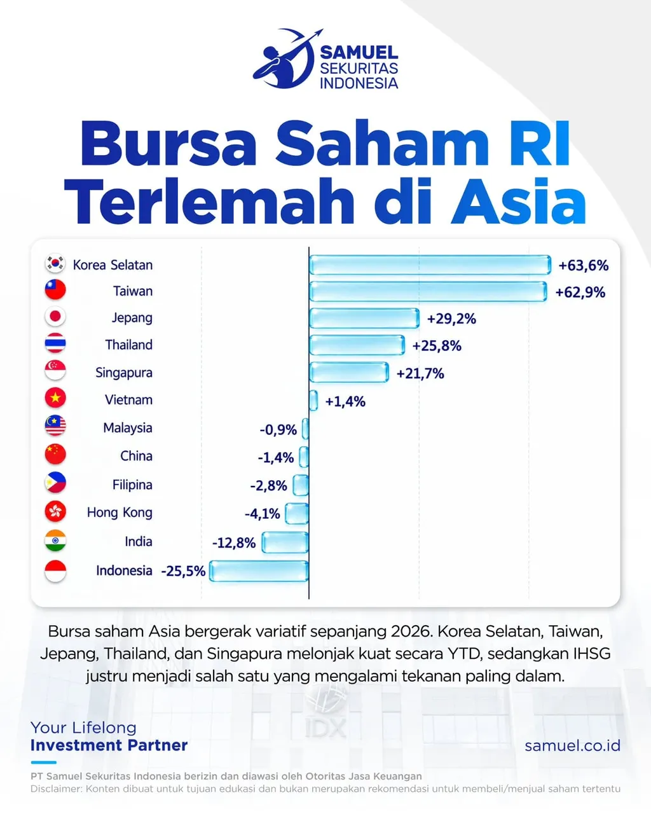
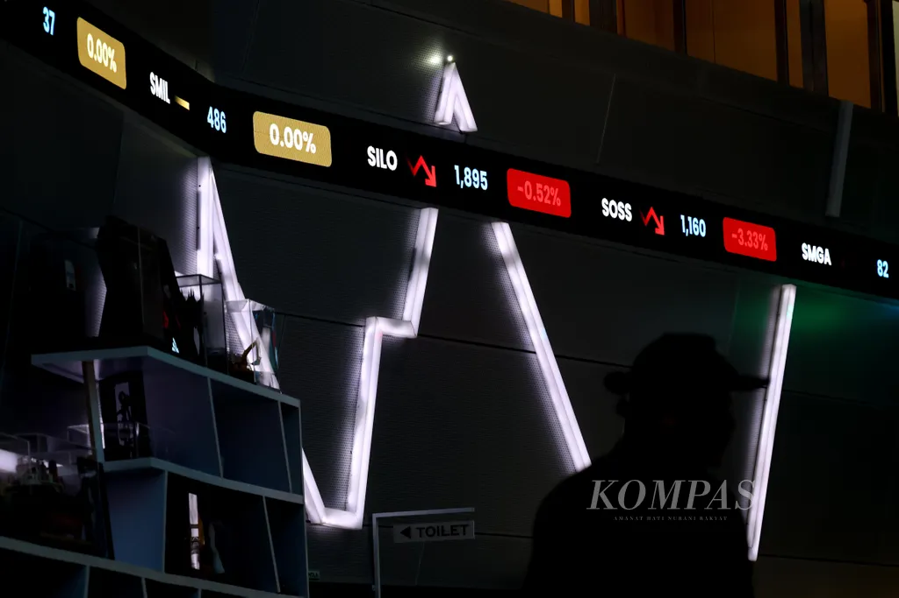
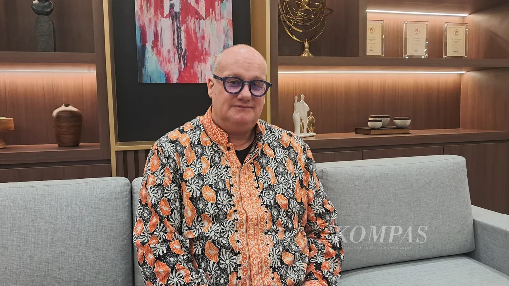

Pasar saham Asia bergerak variatif sepanjang tahun berjalan 2026. Sayangnya, pasar saham Indonesia memimpin pelemahan hingga sekitar 30 persen sampai akhir September 2026. Pelemahan ini lebih parah dibandingkan dengan kinerja pasar saham kawasan lainnya, seperti India (-13 persen), Hong Kong (-4 persen), dan China (-1 persen). Sementara itu, kinerja positif di kawasan regional dipimpin Korea Selatan (63 persen), Taiwan (62 persen), dan Jepang (29 persen).
Di tengah dinamika makroekonomi global, fluktuasi harga komoditas, serta transisi struktur investor domestik, pada Senin (28/9/2026) Kompas mewawancarai Herald van der Linde, Head of Equity Strategy Asia Pacific HSBC, untuk membedah peta jalan pasar modal Indonesia serta peluang pemulihannya ke depan. Berikut petikan wawancaranya.
Sepanjang September, Indeks Harga Saham Gabungan (IHSG) melemah sekitar 7 persen ke level 6.100. Efek kenaikan suku bunga global, terutama Amerika Serikat, yang berlanjut hingga depresiasi rupiah ke level Rp 18.000 per dolar AS, ditengarai menjadi penghambat utama. Apakah faktor makroekonomi global masih menjadi sentimen negatif dalam jangka menengah?
Kalau kita melihat kondisi makro global, ada tiga hal utama yang harus dicermati. Pertama, kenaikan suku bunga di AS. Tren ini memberi efek negatif bagi seluruh pasar berkembang (emerging markets), termasuk Indonesia. Imbal hasil instrumen investasi berbasis dolar AS yang berada di atas 5 persen menjadi jauh lebih menarik sehingga daya tarik aset berisiko seperti saham menurun.
Kedua, ada keterkaitan dengan pergerakan harga minyak dunia. Dinamika geopolitik memicu naik-turun harga minyak dan menciptakan ketidakpastian, terutama bagi negara importir minyak seperti Indonesia. Kebijakan subsidi bahan bakar di dalam negeri pada akhirnya memberikan tekanan terhadap beban fiskal.
Apakah kondisi ini berlangsung jangka pendek atau panjang? Saya memperkirakan dinamika ini masih bertahan dalam 6-9 bulan ke depan. Namun, bagi pasar saham, kuncinya adalah sejauh mana pelaku pasar telah melakukan penyesuaian harga (pricing in). Faktor harga minyak sudah relatif dipahami oleh pasar, sementara dampak suku bunga masih terus dikalkulasi. Itu sebabnya pasar saham Indonesia mengalami koreksi saat ini.

Samuel Sekuritas Indonesia
Bagaimana Anda melihat kondisi domestik pascakebijakan lembaga penyedia indeks global MSCI yang disusul upaya otoritas bursa melakukan reformasi pasar modal? Apakah hal ini masih memicu ketidakpercayaan investor asing?
Sempat muncul kekhawatiran pasar saham Indonesia turun kelas dari emerging market menjadi frontier market. Namun, jika dibandingkan dengan frontier market, Indonesia berada di level yang berbeda jauh—baik dari sisi ukuran pasar, likuiditas, maupun kapasitas produk domestik bruto (PDB).
Meski begitu, karena keputusan berada di tangan MSCI, potensi risiko tetap ada dan kita harus menunggu. Sepanjang pengetahuan saya, otoritas Indonesia telah berkoordinasi aktif dengan MSCI sehingga probabilitas downgrade relatif kecil.
Jika dibandingkan dengan ’frontier market’, Indonesia berada di level yang berbeda jauh—baik dari sisi ukuran pasar, likuiditas, maupun kapasitas produk domestik bruto.
Di luar isu tersebut, tantangan domestik juga datang dari kenaikan harga minyak yang menekan ruang fiskal. Pemerintah berupaya menahan penyesuaian pengeluaran demi menjaga daya beli masyarakat berpenghasilan rendah melalui subsidi. Langkah ini krusial secara sosial meski di sisi lain memberikan tantangan tambahan bagi akselerasi pertumbuhan ekonomi.
Saya cukup terkejut dengan daya tahan pertumbuhan ekonomi Indonesia yang tetap kokoh di tengah tingginya harga minyak dunia. Itu sinyal positif.

KOMPAS/TOTOK WIJAYANTO
Sektor perbankan yang memiliki bobot besar di bursa tampak terus terpukul oleh arus modal keluar. Bagaimana Anda memproyeksikan prospek sektor ini dan indikator apa yang mampu memicu kembalinya investor asing ke saham perbankan?
Suku bunga yang meningkat sebenarnya memberi dampak ganda bagi perbankan. Di satu sisi, kenaikan suku bunga kredit dapat meningkatkan margin bunga bersih karena penyesuaian bunga simpanan cenderung lebih lambat. Namun, di sisi lain, kenaikan suku bunga berisiko menaikkan rasio kredit bermasalah (NPL) serta memperlambat aktivitas ekonomi secara umum.
Sektor perbankan Indonesia memiliki likuiditas dan kapitalisasi pasar yang sangat besar. Ketika investor global di London atau New York memutuskan untuk mengurangi porsi portofolio di Indonesia, saham bank utama, seperti BCA, BRI, atau Bank Mandiri, menjadi aset pertama yang mereka jual karena sifatnya yang paling likuid.
Terkait kapan arus modal asing akan kembali, investor global mencermati dua hal utama. Pertama, faktor fiskal domestik di mana komitmen pemerintah untuk menjaga defisit anggaran di bawah batas 3 persen PDB memberikan kepastian positif bagi pasar.
Kedua, arah kebijakan moneter AS. Selama masih ada potensi kenaikan suku bunga di AS, arus dana cenderung tertahan di instrumen berimbal hasil dolar. Begitu kepastian puncak suku bunga global tercapai, arus modal diproyeksikan kembali mengalir ke emerging markets, termasuk Indonesia.
Secara umum, kinerja perbankan masih cukup baik. Ini didorong permintaan kredit domestik, yang sempat melemah di awal tahun, kini mulai menunjukkan pemulihan secara bertahap. Ekonom kami mengatakan, kinerja kredit perbankan pada triwulan keempat akan lebih baik seiring pulihnya aktivitas bisnis.

Kompas/Erika Kurnia
Bagaimana prospek perkembangan teknologi kecerdasan buatan (AI) secara global dan sejauh mana dampaknya bagi pasar saham Indonesia?
Gelombang investasi AI global berfokus pada pembangunan infrastruktur pusat data dan pengadaan perangkat keras. Manfaat ekonomi terbesar dari rantai pasok AI saat ini dinikmati oleh negara-negara basis manufaktur teknologi utama, seperti Korea Selatan, Taiwan, Jepang, dan China.
Posisi Indonesia, India, dan negara berkembang lainnya saat ini masih berada pada rantai pasok perantara (intermediate supply chain), misalnya memasok bahan baku atau komponen pendukung yang diolah di Asia Timur sebelum diekspor ke AS.
Oleh karena itu, dampak langsung lonjakan investasi AI terhadap bursa saham domestik masih relatif terbatas.
Di sisi lain, ekspansi pusat data secara global mulai menghadapi tantangan ketersediaan dan harga energi. Di masa depan, isu kompetisi alokasi energi antara kebutuhan masyarakat dan kebutuhan industri pusat data berpotensi menjadi perhatian otoritas domestik.
Bagaimana Anda menilai dampak fenomena iklim El Nino terhadap korporasi dan sektor mana yang paling rentan terimbas di pasar saham?
Dampak El Nino mencakup risiko ekologis dan ekonomi yang cukup kompleks. Pasokan air yang berkurang dan kekeringan berdampak langsung pada produksi pertanian serta memicu kenaikan harga pangan, ditambah kenaikan harga pupuk akibat faktor global, ke kawasan Asia Tenggara.
Tekanan inflasi harga pangan ini berpotensi merembet ke kenaikan suku bunga domestik, yang menjadi risiko tidak hanya bagi Indonesia, tetapi juga negara tetangga, seperti Filipina, Thailand, dan India.
Selain sektor pertanian dan konsumer, El Nino kini mulai memunculkan risiko bagi sektor teknologi dan pusat data (data center). Industri ini membutuhkan pasokan air yang besar untuk sistem pendingin (cooling system). Di beberapa negara kawasan, seperti Vietnam dan Thailand, pemerintah mulai memprioritaskan alokasi air untuk kebutuhan rumah tangga dan pertanian ketimbang industri jika kekeringan berlanjut.
Keterbatasan sumber daya ini menambah kompleksitas operasional sektor terkait.
KOMPAS/AGUS SUSANTO
Bagaimana Anda menilai partisipasi investor domestik di Indonesia? Pembelajaran apa yang bisa diambil dari negara lain seperti India untuk memperkuat ketahanan pasar modal lokal?
India memberikan contoh sukses dalam membangun basis investor domestik yang kuat melalui program edukasi dan skema investasi berkala seperti Systematic Investment Program (SIP). Skema ini memungkinkan masyarakat berinvestasi dalam nominal kecil secara konsisten langsung dari aplikasi seluler.
Dampaknya sangat signifikan. Akumulasi dana ritel domestik di India mampu menyerap tekanan saat terjadi aksi jual oleh investor asing sehingga volatilitas pasar dapat diredam. Selain itu, ketergantungan terhadap pembiayaan luar negeri menjadi berkurang.
Ada beberapa poin kunci yang dapat diterapkan Indonesia untuk memperkuat pasar modal domestik. Indonesia perlu menguatkan budaya berinvestasi dengan mengubah preferensi investasi masyarakat dari aset tradisional, seperti emas atau properti, ke instrumen pasar modal secara berkelanjutan melalui edukasi masif.
Hal menarik dari pasar Indonesia adalah lebih dari 50 persen investor di Indonesia saat ini didominasi oleh generasi muda berusia di bawah 30 tahun. Ini merupakan modal demografis yang sangat baik. Otoritas perlu menyediakan saluran modal yang aman, kemudahan infrastruktur transaksi, serta insentif perpajakan agar tabungan domestik dapat terkanalisasi secara optimal ke investasi produktif di bursa saham nasional.